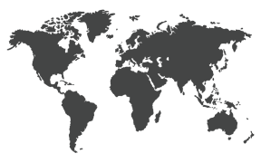

Li Hoi Wan (李愷昀)
李: My mother's maiden name
愷: cheerful, harmonious, kind-hearted, benevolent
昀: soft sunlight, diffused glow of the sun, warmth, radiance
My chinese name was given to me by grandma and grandpa. The name symbolizes a person whose presence naturally brightens those around them with their warm and cheerful personality— an enduring glow that persists through changing seasons. It conveys someone who leads a peaceful and joyful life. The name reflects resilience expressed through softness and strength expressed through kindness and compassion.

Huni (ᜑᜓᜈᜒ)
A bird's song or melody
This Filipino nickname was given to me by my grandmother. This nickname was given to me because as a child, all I ever did was sing. According to her, I was a cheeful kid always dancing and singing around her house. She would also teach me different songs in Tagalog which led to me learning the language. She used to always call my singing a "gift" and always encouraged me to sing and perform at family events.